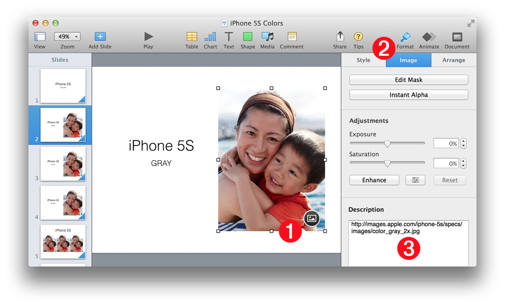

This short tutorial demonstrates a useful technique for creating a presentation that incorporates images from online sources. Using this technique, linked images in a presentation can be updated periodically throughout the presentation development process.
NOTE: The online images used with the technique demonstrated below, can be from your company’s website, or servers, or from a website that provides royalty-free images to the public, such as HubbleSite.org. Be sure that you have checked the assigned rights of the images you use in your presentations.
Tagged Placeholders
The following describes how image placeholders in slides can be tagged with URLs to online source images.

(1) Image Placeholder • The image placeholder selected in the slide. Placeholders are identified with by their circular icon overlay of an image.
(2) Format Pane > Image Settings Tab • The Image Settings tab is selected in the Format pane.
(3) Image Description • The Description field usually contains the text to be read by the VoiceOver application. For the purposes of this presentation development technique, the description is replaced with a URL to the image file to be downloaded to the computer, and then used as the replacement for the placeholder. NOTE: the example script provides the option to replace the image URL with the embedded description from the replacement image file (if it has one).
The Example Tutorial
DO THIS ►DOWNLOAD and open the example Keynote presentation (⬆ see above ) that has been pre-tagged with image URLs.
DO THIS ►With an active internet connection, open the example script (⬇ see below ) in the AppleScript Editor application and run it.
The example script provided below is designed to examine each slide of a presentation for images whose description is a URL. If a URL is found by the script, it will attempt to download the online image to disk and then replace the placeholder image with the downloaded file.
NOTE: If the script property replaceDescriptionWithURL is set to true, then the script can be run over and over to get the latest version of the image from its URL.
(⬇ see below ) A slide with the imported images: